◀ ▶
BEFORE
AFTER
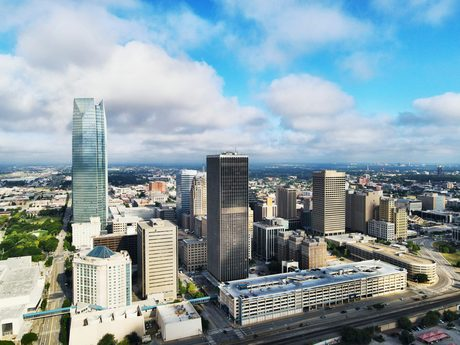
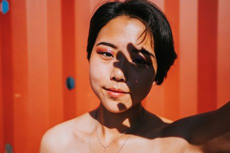
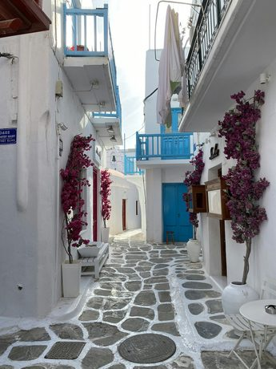
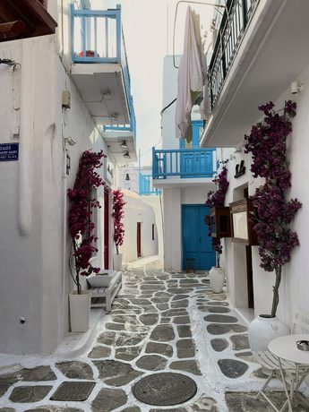
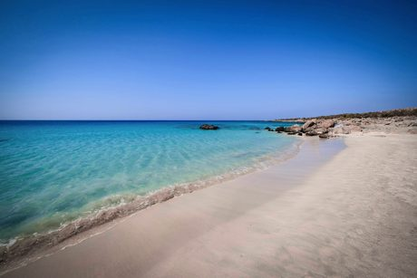
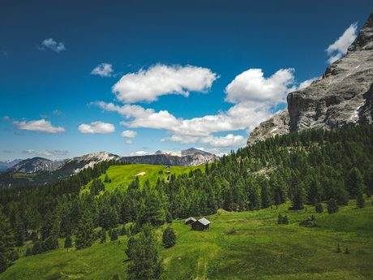
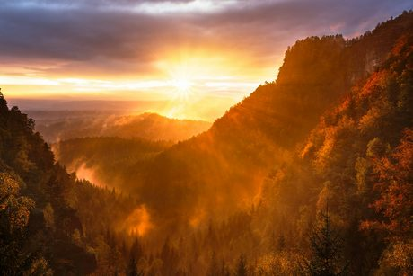
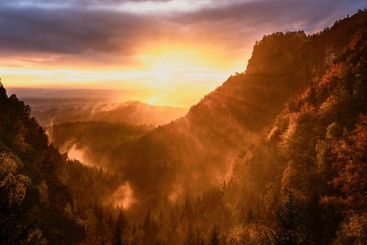
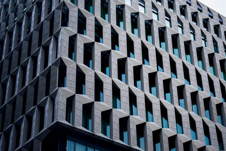
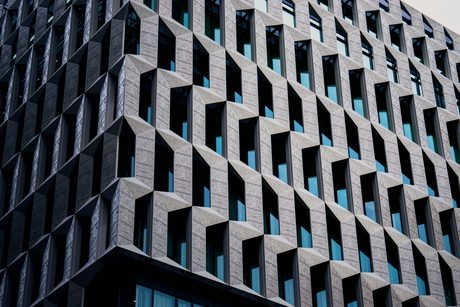
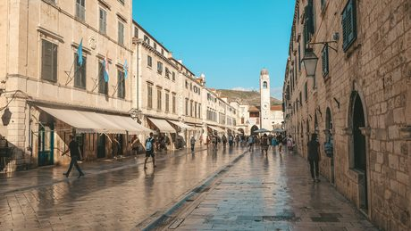
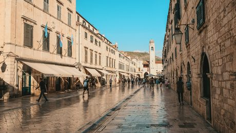
GOLDEN_DAYLIGHT_CINEMA.cube
— 33³, red-fastest, DOMAIN_MIN 0 0 0 / DOMAIN_MAX 1 1 1,
float written to 6 decimals, no NaN/Inf. It is fully self-contained: the file already
contains the Apple Log 2 decode, the Apple Wide Gamut → Rec.709 matrix, the grade and the
gamma 2.4 encode, so nothing else needs to be loaded.
| Input | Apple Log 2, Apple Wide Gamut, 0–1 code values (as recorded) |
|---|---|
| Output | Rec.709 primaries, D65, SDR, pure gamma 2.4 code values |
| Interpolation | tetrahedral (the fit also constrains trilinear) |
| Black point | Apple Log 2 video black sits at code 0.1505; everything below it maps to 0 |
All eight photographs are real,
unmodified camera images from Unsplash, used under the Unsplash License (free for
commercial and non-commercial use, no permission needed). No AI-generated imagery is used
anywhere in this project. Full provenance, including each file's original URL, resolution
and the modifications applied (resize only), is in SOURCES.txt.
This is a stills-grade LUT, not a camera profile: it has no grain, halation, bloom,
sharpening, noise reduction or depth awareness, and it cannot recover clipped highlights
that the camera never recorded. The "after" images are produced by an independent
implementation that reads this exact .cube file, so what you see is what the LUT does.
The full measurements — bake error, monotonicity, clipping, skin hue, noise gain — are in
VALIDATION_REPORT.txt.